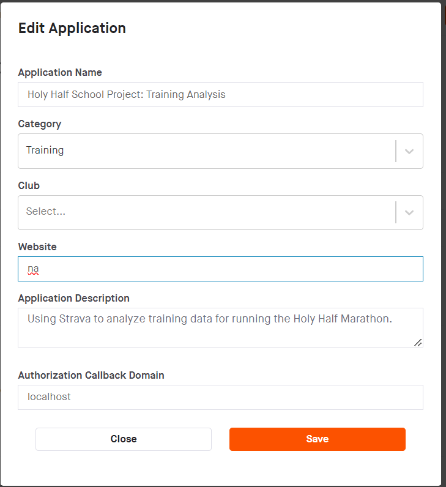
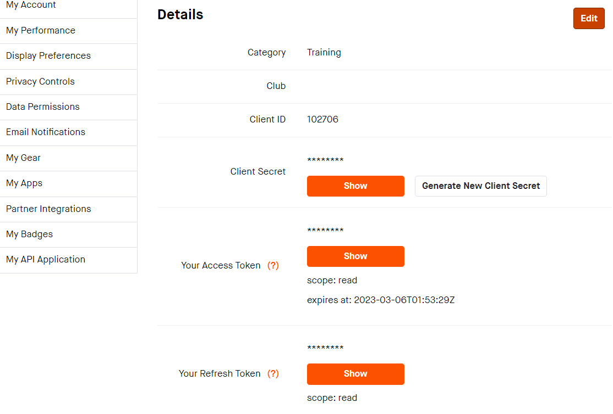

Thank you for volunteering!
This page is created explicitly to discuss how to set up the api for our Smart Health Project.
PLEASE NOTE THAT GIVING US YOUR API DETAILS ALLOWS US TO SEE AND USE YOUR DATA
What should you do first?
- Make sure you have a Strava account set up
- Log in on your preferred web browser (on your laptop)
- Fill out a Strava API request using this link!
This is what your request should look like:

It will ask you for a photo to complete it. Any photo will do.
-
You should then get something like this:

After that is set up, please fill out this Google form
So that we can take your data
Thank you so much for participating! Good luck on your training :)